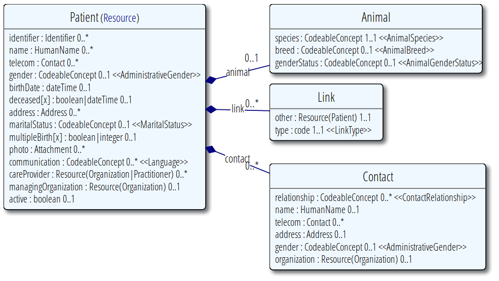

FHIR
FHIR
Open Health IT Standard
by niquola
FHIR®
- Fast
- Healthcare
- Interoperability
- Resources
Why?
- HL7 v2
- HL7 v3
- HL7 CDA
- ?
Road Map
- 2011 - concept
- Sep 2012 - first draft ballot
- Sep 2012 - first conectathon
- Aug/Sep 2013 - first DSTU
- Jan 2014 - finilize DSTU
- 2015 - second DSTU
- 2016 - normative
Principles
- focus on implementers
- common scenarios
- web technology
- freely available
- community driven
Why "RESOURCES"?
REST architecutre
Resources ~50 resources

Resource Groups
- Attribution
- Conformance
- Device Interactions
- Diagnostics
- Document Handling
- Entities
- General
- Medications
- Workflow Management
Attribution Group
- Patient
- RelatedPerson
- Practitioner
- Organization
Patient

FHIR in Russian

Libs & Tools
- Java, C#, JavaScript
- Clients
- Servers
- Tools
Fhirbase
Document/Relational storage for FHIR

Fhirbase
- Open Source MIT
- PostgreSQL: ACID, SQL
- jsquery & VODKA index
- most of API
Fhirplace
FHIR server implementation backed by fhirbase
fhir.js
Generic JavaScript client